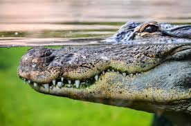

| Los Cocodrilos
Se denomina comúnmente cocodrilo a cualquiera de las 14 especies pertenecientes a la familia de los saurópsidos arcosaurios Crocodylidae. Estos reptiles viven en África, América, Asia y Australia y los científicos estiman que aparecieron hace unos 55 millones de años, durante el Eoceno. Con un modo de vida semiacuático, y con una tendencia a vivir en congregaciones, los cocodrilos son depredadores y se alimentan principalmente de otros animales vertebrados, aunque no es raro encontrar algunas especies que se alimenten de moluscos y crustáceos.

Los cocodrilos están dotados de una piel escamosa, muy dura y seca. Sus fosas nasales y sus ojos se encuentran en la parte superior de la cabeza, lo que le permite ver y respirar mientras permanece en el agua. Suelen pasar la mayor parte del día parados, a la espera de que una presa se acerque lo suficiente como para lanzar un ataque súbito. Tienen además cuerpos pesados y metabolismos generalmente lentos, aunque pueden controlar la velocidad de su digestión según la abundancia de presas y de la temperatura ambiente.
Presione el cocodrilo para volver
|